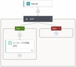

電通総研 テックブログ
https://tech.dentsusoken.com/
電通総研が運営する技術ブログ
フィード
ChatGPTでバーチャルカウンセラー作ってみた
電通総研 テックブログ
STEP1：ライブラリのインストール STEP2：APIキーの設定 STEP3：データセットのダウンロード STEP4：和訳処理 STEP5：トレーニングデータの作成 STEP6：ファイルのアップロード STEP7：ファインチューニングジョブの開始 STEP8：検証 ケース0：「あなたは何が得意ですか？どんな振る舞いをしますか？」 ケース1：「仕事でのプレッシャーが大きく、ストレスがたまり何をしても楽しめません。どうすれば良いでしょうか？」 ケース2：「人前で話すときに緊張してしまい、自分に自信が持てません。克服する方法を教えてください。」 ケース3：「恋人との関係に悩んでいて、彼女の機嫌が悪…
3日前

Regal を使って Rego を Lint する
電通総研 テックブログ
こんにちは。X（クロス）イノベーション本部クラウドイノベーションセンターの柴田です。この記事では Rego の Linter である Regal を紹介します。1この記事は 電通総研 Advent Calendar 2024 の 5 日目の投稿です。前日の記事は井手さんの「入社 3 年目の業務内容紹介」でした。 Open Policy Agent / Rego とは？ Regal とは？ Regal を実行する Lint を実行する ローカルで実行する インストールする 実行する CI で実行する エディタと組み合わせて実行する コードを自動修正する ルール 組み込みルール カスタムルール R…
4日前
電通総研IT 文系出身 新卒3年目社員の働き方紹介
電通総研 テックブログ
こんにちは、電通総研IT、文系出身 新卒3年目の井手です。 普段は、金融機関のポータルサイトの保守を担当しています。 この記事では、私の業務内容や1週間の過ごし方など、日々の働き方についてわかりやすくご紹介します。 IT企業への就職をお考えの学生の皆さんや、電通総研ITにご関心をお持ちの方の参考になれば幸いです。 自己紹介 私は文系学部の出身で、学生時代には公共政策やITについて幅広く学んでいました。 そのため開発経験がないままIT企業に入社しました。 そんな私がIT企業を志すきっかけとなったのは、学生時代の研究室での活動を通じて、 ITの持つ可能性の広さに触れたことです。 ITを活用すること…
5日前

Backlogで特定の条件のチケットが起票・更新されたときにだけSlackに通知がほしい…！
電通総研 テックブログ
はいどーもー！ コミュニケーションIT事業部の宮澤響です！ 本記事は電通総研 Advent Calendar 2024 2日目の記事です！ 記念すべき1日目である昨日の記事は、小林日菜美さんの「【Salesforce認定アソシエイト試験】知識0から1ヶ月で合格した話」でした！ こちらは単なる学習方法や受験方法の紹介記事ではなく、試験前後に小林さんが実際に見舞われた（誰にでも起こり得そうな）トラブルとその回避方法についても分かりやすくまとまっている記事ですので、同試験を受験予定の方もそうでない方も、ぜひご一読ください！ ということで、本記事では、Power Automateを用いて、Backlo…
6日前
【Salesforce認定アソシエイト試験】知識0から1ヶ月で合格した話
電通総研 テックブログ
こんにちは！HCM事業部の小林です。 本記事は電通総研 Advent Calendar 2024 初日の記事となります。 今回は「Salesforce」という言葉しか知らなかった筆者が、1か月勉強してSalesforce認定アソシエイト試験に合格した話です。勉強方法や必要な勉強時間、役に立った過去問などを紹介します。 実は試験を申し込んだ当初は何も分かっておらず、試験当日も100%の力を発揮することができませんでした。 同じように迷う方が少しでも減るように、自分の体験をもとに申込方法と受験の注意点を詳細にお伝えします。 これから受験する人はぜひ最後までご覧いただきたいです。 Salesforc…
7日前

ヘッドレスCMSの選定 - StrapiとSanityの比較
電通総研 テックブログ
こんにちは、XI本部プロダクトイノベーションセンターの瀧川亮弘です。 現在行っているWebサイトの運用において、ヘッドレスCMSの導入を検討しています。 本記事では、ヘッドレスCMSの選定で調査したことを共有します。 ヘッドレスCMSとは ヘッドレスCMSとは、フロントエンドを持たない、CMS（コンテンツ管理システム）のことです。 ここで言うコンテンツとは、ウェブサイトやアプリで使用される、テキスト、画像、動画、音声、ドキュメントなどのデジタルデータを指します。 WordPressのような従来型のCMSでは、コンテンツの管理と表示が一体化しています。 管理画面からフロントエンド含めてオールイン…
11日前
電通総研IT Outsystems開発 新卒3年目の働き方紹介
電通総研 テックブログ
こんにちは、電通総研IT第2ビジネスユニット19の奥村です。 現在はOutSystemsというローコード開発プラットフォームを使って、製造系企業のシステム開発を担当しています。 ※ローコード開発とは、「必要最小限のソースコード開発でソフトウェア・アプリ開発を行う手法」のことです。 この記事では、入社してから現在までの仕事内容についてざっくりと説明します。 この記事が、IT業界に興味のある方の参考になれば幸いです。 自己紹介 2022年に新卒入社して3年目になります。 大学では経済学を専攻していて、ITやプログラミングといったものとは無縁でした。 私がIT業界を目指した理由は、手に職をつけたい、…
14日前
SSVCを用いた効率的な脆弱性対応 〜 IPA「脆弱性対応におけるリスク評価手法のまとめ」を読んで 〜
電通総研 テックブログ
こんにちは、コーポレート本部 サイバーセキュリティ推進部 セキュアシステムデザイングループの福山です。 脆弱性が日々報告される中、迅速かつ適切な対応を行うためには、効果的なトリアージが欠かせません。 今回は、脆弱性対応を行う組織向けに、効率的な対応プロセスの進め方についてご紹介します。 はじめに FutureVulsについて SSVCを活用したリスク評価の概要 FutureVulsによるリスク評価 I. 事前準備 リスク評価対象とするサンプルシステムの概要 資産の登録 SSVCの設定 Exposure（インターネット露出レベル） Human Impact（攻撃された際の業務影響） 対応期限の設…
18日前
［前編］現場でのPM育成活動 ～活動内容の紹介
電通総研 テックブログ
こんにちは、電通総研の金子大地です。 この1年、所属するコミュニケーションIT事業部において、「若手プロジェクトマネージャー（以降「PM」）の育成活動」を行ってきました。その「活動内容」（前編）と「コンテンツ概要」（後編）を学生さん向けに紹介します。 多くの学生さんは、「PM」という言葉を聞いたことがあっても、具体的な仕事内容までは想像できないと思います。また、PMはプロジェクトチーム（多ければ50名以上）の責任者として推進役を担いますが、「そんなことが自分にできるんだろうか」と不安になりませんか。 電通総研には、PMとしてのチャレンジの舞台と、先輩社員をはじめとするサポート体制があります。こ…
21日前
ITアーキテクトの働き方および業務紹介 ～.NET:Azure Functionsを「インプロセスモデル」から「分離ワーカーモデル」へ移行する～
電通総研 テックブログ
こんにちは。 電通総研IT 重松です。 Azure クラウドサービスを使って、アプリケーション開発およびアーキテクチャ構築の業務を行っております。 この記事では、主な業務内容と直近で対応した.NET:Azure Functionsの開発についてご紹介します。 1.初めに 1-1. 自己紹介 2. 業務紹介（Azure Functionsの分離ワーカーモデルへの移行） 2-1. なぜ移行が必要か 2-2. Azure Functionsのモデルの違い 2-3. 移行にあたっての進め方 3. 課題対応（診断設定経由でのログ出力および保存方式においてログが欠落する） 3-1.事象 3-2.原因と回避…
21日前
GitHub Copilot（VS Code版）の新機能「Copilot Edits」を使ってAIとテスト駆動開発をする
電通総研 テックブログ
こんにちは、Xイノベーション本部の米久保です。 サンフランシスコで2024年10月29日から30日にかけて開催されたイベントGitHub Universe 2024に合わせて、さまざまな新技術・新機能に関するリリースが10月29日にGitHub社より発表されました。 とくに、GitHub Copilotがマルチモデル対応しAnthropic社のClaude 3.5 SonnetやGoogle社のJemini 1.5 Proなど最新のLLMが使用可能となったこと、自然言語だけで動作可能なマイクロアプリを構築できるツール「GitHub Spark」はSNS上でも大きな話題となりました。 これらと比…
1ヶ月前
Next.js: Static Exports のi18n(多言語)対応
電通総研 テックブログ
こんにちは、XI本部プロダクトイノベーションセンターの瀧川亮弘です。 現在、Next.jsのStatic Exportsにより、Webサイトの構築を行っています。 本記事ではStatic Exportsのi18n(多言語)対応の実装方法を紹介します。 Static ExportsはNext.jsのアプリケーションを静的コンテンツ(HTML/JavaScript/CSS/Image)としてエクスポートできる機能です。 Nodeサーバーが不要なため、S3などで簡単にホスティングできます。 React/Next.jsのコンポーネントベース指向やルーティング機能などの恩恵を享受しつつ、インフラの運用コ…
1ヶ月前
JSTQB認定テスト技術者資格 Foundation Level試験 Version 2023V4.0.J02を公開初日に受験してきた話
電通総研 テックブログ
はいどーもー！ 閲覧履歴を表示させるためにCtrl+H（Windows）やcmd+Y（Mac）を押下するつもりが誤ってCtrl+Yやcmd+Hを押下してしまう、コミュニケーションIT事業部の宮澤響です！ 本記事では、2024年11月1日より新シラバスVersion 2023V4.0.J02準拠となったJSTQB認定テスト技術者資格 Foundation Level試験を受験してきた話をまとめます！ なお、その場で結果が表示されるタイプの試験ではないため、本記事公開時点では合否は判明していません…あしからず…！ JSTQB認定テスト技術者資格 Foundation Level試験とは 受験のきっ…
1ヶ月前
電通総研IT パッケージ開発 新卒3年目社員の働き方紹介
電通総研 テックブログ
こんにちは。電通総研IT入社3年目の木ノ原です。 現在は第3ビジネスユニットに所属しており、金融機関向けソリューションである、 LINKGATEWAYというパッケージの開発・保守を担当しています。 この記事では、私のこれまでの仕事内容などについてお話しします。 1．自己紹介 私は2022年に新卒入社し、半年の研修を経て第3ビジネスユニットに配属となり、現在は3年目となります。 大学は情報学部情報工学科出身で、プログラミングなどについて学んでいました。 また、もともと金融関係のことにも興味があったこともあり、金融関係の仕事に携われる部署を希望したところ 希望通りでかつ、お客様と直接やり取りができ…
1ヶ月前
MicroProfile Configで始めるJavaアプリケーションの設定管理
電通総研 テックブログ
みなさんこんにちは、電通総研コーポレート本部システム推進部の佐藤太一です。 設定管理は開発段階だけでなく、運用フェーズでも重要な課題です。MicroProfile Configを活用すれば、設定値の変更が及ぼす影響を最小限に抑えつつ、柔軟な設定管理が実現できます。 このブログエントリでは、MicroProfile Configの基本概念と使い方を初心者向けに解説します。アプリケーションの設定管理を効率化するための第一歩を踏み出しましょう。 はじめに MicroProfile Configの概要 MicroProfile Configを使う目的 アプリケーション開発環境 設定ソース 標準サポート…
1ヶ月前
FlutterFlowでサクっと開発する社内業務スマホアプリ
電通総研 テックブログ
XI本部 プロダクトイノベーションセンター アジャイル開発グループの徳山です。 前回の記事「FlutterFlowでFirebaseと連携する方法」では、FlutterFlowとFirebaseを活用したバックエンドのセットアップ方法を詳しく解説しました。今回は、FlutterFlowを使って開発できる社内業務向けスマホアプリの作成方法を紹介します。これまで解説した内容を確認しながら、実際のアプリ開発の流れをご覧ください。 はじめに どのようなアプリを作るのか アプリ概要 機能概要 アプリの作成 1. プロジェクトのセットアップ FlutterFlowプロジェクトの作成 データベースの設定 u…
1ヶ月前
電通総研IT 大規模基幹システム開発 6年目社員の働き方紹介
電通総研 テックブログ
始めまして。 電通総研ITに6年間在籍する小椋と申します。 今回は、入社してから今までの業務を振り返りつつ、記事にいたしました。 弊社を知りたいと考えている皆様のお役に立てると幸いです。 経歴 まずは私の今までの経歴を簡単に紹介したいと思います。 2019年3月 大学卒 2019年4月 電通総研ITへ新卒入社 4月～6月末 電通総研グループ研修を受講 7月～9月末 電通総研IT社研修を受講 10月～2020年3月末 現場配属後、現場にてOJT研修を受講 2020年4月～現在 複数社が利用する社内基幹システムの開発案件に従事 上記の通り、入社後の研修以降、ずっと1つの大型案件に従事してきました。…
2ヶ月前
FlutterFlowでFirebaseと連携する方法
電通総研 テックブログ
XI本部 プロダクトイノベーションセンター アジャイル開発グループの徳山です。 前回の記事「FlutterFlowに制約はある？できることとできないこと」では、FlutterFlowを使った開発における制約や注意すべきポイントをお伝えしました。今回は、FlutterFlowと相性の良いバックエンドサービスであるFirebaseとの連携について詳しく説明いたします。 はじめに Firebaseとは何か FlutterFlowの接続先について 1. 標準でサポートされているバックエンド（FirebaseやSupabase） 2. API Connector Firebaseとの接続方法（環境構築手…
2ヶ月前
AWS CDKでElastiCache for Valkeyクラスターを作ってみた
電通総研 テックブログ
こんにちは。コーポレート本部 サイバーセキュリティ推進部の耿です。 ElastiCache for Valkey が 日本時間 2024/10/9 に利用できるようになりました。Valkey とは、ライセンス変更が発生した Redis をフォークしたインメモリデータベースであり、今後も継続して OSS として使用できるよう開発を進めていくことが発表されています。 Redis の代替の選択肢となり得る ElastiCache for Valkey を早速 AWS CDK で作ってみました。 オンデマンド (Self-designed) クラスタを作成する Serverlessクラスタを作成する …
2ヶ月前
FlutterFlowに制約はある？できることとできないこと
電通総研 テックブログ
XI本部 プロダクトイノベーションセンター アジャイル開発グループの徳山です。 前回の記事「FlutterFlow vs Adalo：ノーコードモバイルアプリ開発ツールの比較」では人気のノーコード開発ツールのAdaloと比較することでFlutterFlowとの機能の違いやメリットを紹介しました。今回は、FlutterFlowの制約について焦点を当てることでFlutterFlowを利用した開発ではどのような注意点があるのか理解を深めていただきます。 はじめに 制約 各制約について 1. デザインの制約 タブバーのデザインが調整できない 多言語に対応していないウィジェットがある 2. ロジックの制…
2ヶ月前
JBangを使って複数のJavaをWindows上で管理する。
電通総研 テックブログ
皆さんこんにちは。システム推進の佐藤太一です。 このエントリでは、Windows上にインストールした複数のJVMを上手く切り替える方法について説明します。 はじめに JBangのインストール JBangを使ったJavaのインストール デフォルトのJavaを設定する JBangを使ってJavaを切り替える PowerShellの補助関数を使って切り替える PowerShellのプロファイルを作りこんで自動で切り替える Start-ThreadJob を使う理由 バージョンの評価ロジックについて グローバル変数を使った処理回数の低減 類似するツール まとめ はじめに Javaでアプリケーション開発…
2ヶ月前
FlutterFlow vs Adalo：ノーコードモバイルアプリ開発ツールの比較
電通総研 テックブログ
XI本部 プロダクトイノベーションセンター アジャイル開発グループの徳山です。 前回の記事「FlutterFlowとは？ノーコードでスマホアプリ開発を始める方法」ではFlutterFlowについての特徴や機能といった基本知識を紹介しました。今回は、FlutterFlowを同じく人気のあるノーコードツールであるAdaloと比較することで両者の特徴や違いを解説します。よりFlutterFlowへの理解を深める助けになれば幸いです。 はじめに Adaloの概略 FlutterFlowとAdaloの違いについて Adaloの特徴 シンプルなビジュアルエディター 内蔵データベース 各ツールに適した場面 …
2ヶ月前
Azure Cosmos DB for MongoDBのデータベース移行： Azure DatabricksとAzure Data Factoryの比較
電通総研 テックブログ
はじめに 背景 Azure Data Factory利用時の注意点 Azure DatabricksとAzure Data Factoryの比較 Azure Databricksの利用方法 Azure Databricksの作成 クラスターの作成 PySparkの記述方法 storesコレクション ordersコレクション merged_storesコレクション 終わりに はじめに 電通総研XI本部AIトランスフォーメーションセンターの岩本です。この記事では、Azure Cosmos DB for MongoDBのデータベース移行手段としてAzure DatabricksとAzure Data…
2ヶ月前
FlutterFlowとは？ノーコードでスマホアプリ開発を始める方法
電通総研 テックブログ
XI本部 プロダクトイノベーションセンター アジャイル開発グループの徳山です。 私たちのグループは現在ローコードツール、その中でもマルチプラットフォーム向けにアプリケーションを開発できるFlutterFlowの活用を行っており、業務アプリのMVP開発などに活用しています。 昨年「ノーコードツール「FlutterFlow」を利用すると5時間でどんなアプリを作ることができるのか」というタイトルで記事を書き多くの方に閲覧していただきました。 ノーコードやローコードに対する関心も高まってきているため、改めて「FlutterFlowのことを知りたい」、「FlutterFlowで開発を始めたい」という方向…
2ヶ月前
SupabaseとDrizzle ORMを利用する場合のDBスキーマの管理方法
電通総研 テックブログ
こんにちは、電通総研の瀧川亮弘です。 本記事ではSupabaseとDrizzle ORMを利用する場合のDBスキーマの管理方法について記載します。 テーブル定義は、Drizzleのお作法に則り、TypeScriptで管理しています。 schema.ts import { boolean, pgEnum, pgTable, primaryKey, timestamp, uuid, } from "drizzle-orm/pg-core"; export const roleEnum = pgEnum("Role", ["admin", "general"]); export const user…
2ヶ月前
Supabase: 参照はRLS（Row Level Security）、登録更新削除はEdge Functionsで認可制御を実装した話
電通総研 テックブログ
こんにちは、電通総研の瀧川亮弘です。 現在、Supabaseによるアプリ開発を行っています。 本記事ではSupabaseの認可制御をどのような方針で実装しているのか紹介します。 前提 アプリからSupabaseへのリクエストは2つのAPIを使い分けています。 一つ目にSupabaseがスキーマ情報をもとに自動生成するRESTful APIです。 内部的にはPostgRESTというライブラリが用いられています。 こちらは単純なCRUD操作しかできません。 二つ目にEdge Functionsです。 こちらはTypeScriptベースのサーバーレス関数です。 任意の処理をかけるため複雑な要件に対応…
3ヶ月前
GitHub Actions で Amazon Inspector を利用した脆弱性スキャンを行う
電通総研 テックブログ
こんにちは。コーポレート本部 サイバーセキュリティ推進部の耿です。 2024/6に Amazon Inspector が GitHub Actions でのコンテナイメージスキャンをサポートしたとのアナウンスがありました。コンテナイメージの脆弱性スキャンに既にTrivyを利用している方も多いと思いますが、別の選択肢として Inspector によるスキャンを試してみました。 また、実はコンテナイメージのスキャンだけではなく、言語パッケージのバージョンファイルやDockerfileを静的解析することも可能のため、それもやってみました。 仕組み アクションを紐解く リポジトリ内のファイルをスキャン…
3ヶ月前
オープンソースのJavaScriptライブラリ「Leaflet」で地図表示を試してみる
電通総研 テックブログ
XI本部スマートソサエティセンターの野網です。データ連携基盤に関連する自治体案件に携わっています。この自治体案件ではデータ連携基盤だけでなく、基盤上で提供するサービスについても検討しています。防災やインフラ管理の観点では、地図上でさまざまなデータを重ね合わせて可視化するGIS（地理情報システム）の実現が重要視されています。 Leaflet 今回は地図機能を提供するオープンソースのJavaScriptライブラリである「Leaflet」を触って色々と機能を確認してみました。 ベースとなる地図を指定できるか 地図上にピンを立てることができるか（Google Mapsとかでよく見るもの） 地図上に任意…
3ヶ月前
yfinanceとAWSで未来の株価を予測する(後編)
電通総研 テックブログ
こんにちは。コミュニケーションIT事業部 ITソリューション部の英です。 普段はWebアプリやスマホアプリの案件などを担当しています。あと、趣味でAIを勉強しています。 前回はSageMakerの線形学習モデルを使って、S&P500の100日後のスコアを予測しました。 今回は同じデータを使って、Amazon Forecastで予測をしてみましょう。 →前回の記事 Amazon Forecastはマネージド型の機械学習サービスです。 これにより、専門的な機械学習の知識がなくても、需要予測、在庫管理、収益予測などを簡単に行うことができます。 ちなみに、Amazon Forecastは新規ユーザーへ…
3ヶ月前
web3入門：SNSログインでNFTを獲得！thirdwebを用いたweb3サービスを構築してみた
電通総研 テックブログ
こんにちは。金融ソリューション事業部の姫野です。 1. 今回実装する内容 1.1 実装内容のキーポイント 1.2 ユーザー体験の流れ 1.3 ガス代について 2. 利用サービス 2.1 thirdwebサービス 2.1.1 Connect 2.1.2 Engine 2.1.3 Drop（ERC1155） 2.1.4 React SDK 2.2 その他 3. 実装詳細 3.1 配布用のNFTコントラクトの作成 3.1.1 thirdwebへウォレットでログイン（or 新規作成） 3.1.2 コントラクトの作成、デプロイ 3.1.3 NFTの発行準備 3.2 トランザクションプロバイダの構築 3.…
3ヶ月前